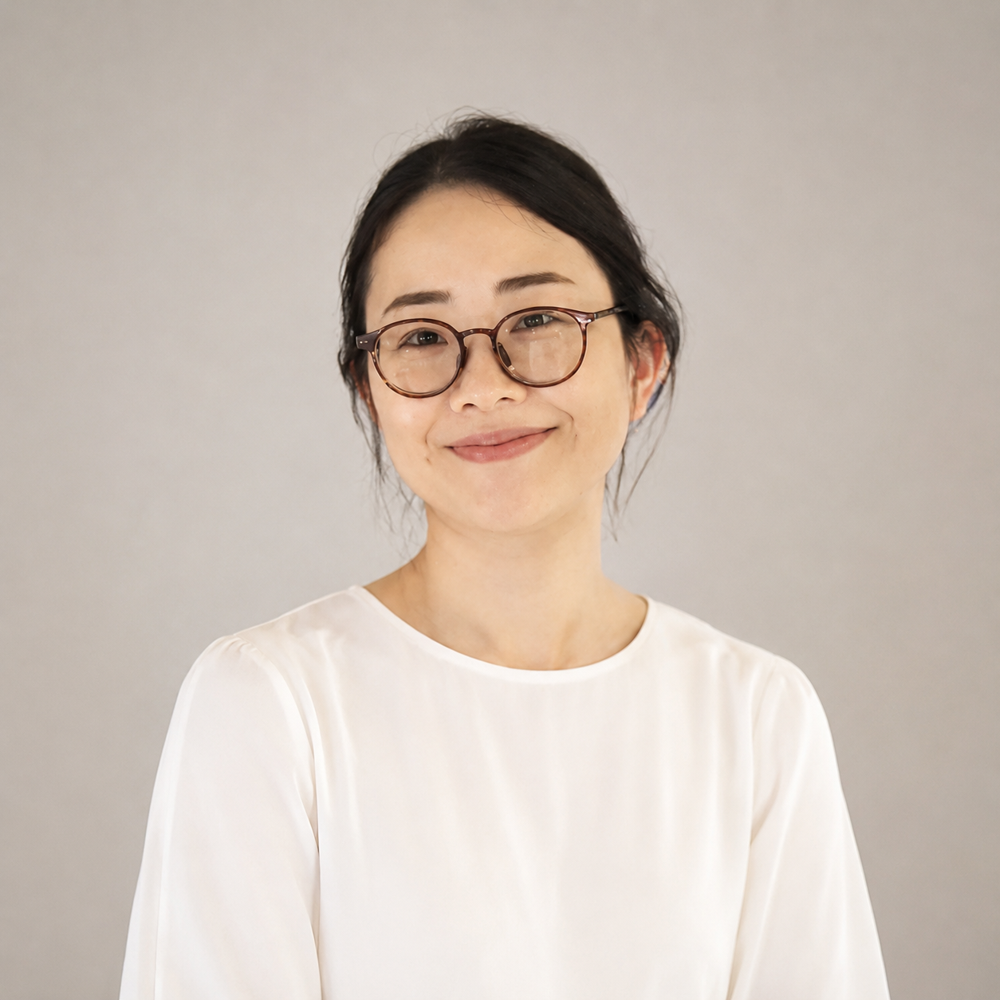

김숙향 金淑香
학술연구교수 · 중국 명청문학Academic Research Professor · Ming–Qing Literature
고려대학교 중국학연구소 · 한국연구재단 학술연구교수(A형, 2023–2028)Center for Chinese Studies, Korea University · NRF Academic Research Professor (Type A, 2023–2028)
명청(明淸) 시대의 소화(笑話) 문헌을 중심으로, 풍몽룡·장대·김성탄으로 이어지는 문인들의 편집·비평 의식과 雅/俗의 문화 위계를 연구합니다. 최근에는 디지털인문학 방법론으로 소화 코퍼스를 구축하고 그 경계와 편집 양상을 분석하는 작업을 이어가고 있습니다.
My research centers on the comic literature (xiaohua) of the Ming–Qing period — the editorial and critical consciousness of literati from Feng Menglong to Zhang Dai and Jin Shengtan, and the elegant/vulgar (ya/su) cultural hierarchy. I am building a digital corpus of xiaohua to analyze how the genre's boundaries are editorially constructed.
관심 연구Research Interests
학력Education
경력Career
학술 논문Journal Articles
역서Translations
표지나 아이콘을 누르면 온라인 서점으로 이동합니다. Click a cover or icon to open its Kyobo page.
저서Authored Books
강의Teaching
- 중국 인문 텍스트와 디지털 큐레이션Chinese Humanities Texts & Digital Curation · 고전 텍스트를 디지털 방법으로 큐레이팅하는 융복합 강의· An interdisciplinary course on curating classical texts with digital methods
쪽지 보내기Send a Note
남기신 메시지는 공개되지 않고 김숙향에게만 비공개로 전달됩니다. Your message stays private and is delivered only to Kim Sook Hyang.